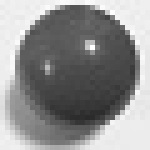

プログラマの為の
数学勉強会
第1回
(於)ワークスアプリケーションズ中村晃一
2013年9月5日
自己紹介
- 中村晃一
- 東京大学 大学院 情報理工学系研究科
コンピュータ科学専攻 後期博士課程 2年 - プログラム最適化・言語処理系の実装技術・人間と言語の関係等に興味があります。
- twitter: @9_ties
謝辞
この会の企画・会場設備の提供をして頂きました
㈱ ワークスアプリケーションズ様
にこの場をお借りして御礼申し上げます。
この資料について
- http://nineties.github.com/math-seminar に置いてあります。
- SVGに対応したブラウザで見て下さい。主要なブラウザで古いバージョンでなければ大丈夫だと思います。
- 内容の誤り、プログラムのバグは@9_tiesかkoichi.nakamur AT gmail.comまでご連絡下さい。
イントロダクション
勉強会開催の動機
- 難しい事をやろうとすると数学が必要となる事が良くあります。
- 特に大学1,2年次に学ぶ「微積分学」「線型代数学」「確率・統計学」の知識は前提として要求される事が多いです。
例
本書を理解するのに，パターン認識や機械学習について，あらかじめ何も知らなくてもよいが，多変数微積分や基礎的な線型代数についての知識は必要である． また，確率について精通していれば，本書の理解に役立つ．C.M.ビショップ著「パターン認識と機械学習」まえがきより引用

勉強会の趣旨
- 非常に初歩的な所から「微積分学」「線型代数学」「確率・統計学」の講義を行います。
- 計算機を活用する為に必要な「数値計算」の各種アルゴリズムも紹介します。
お断り
- 応用を意識した内容であることと時間の制約から、基礎的な話題は省略したり簡単に紹介する形になります。
- 出来るだけ多くの具体的な応用例を紹介する予定ですが、教養レベルのお話しか出来ませんのでご了承下さい。
参考書
演習を重ねなければ数学の力は身につきませんが，勉強会でそこまでやる時間はありませんので，各自で練習してください。
良い参考書・演習書は前提知識によって変わるので一概にどれが良いとは言えませんが，全くの初心者の方は以下のようなシリーズ物の易しい参考書を選ぶと良いと思います。
- 明解演習シリーズ
- 理工系数学のキーポイントシリーズ
- キャンパス・ゼミシリーズ
- など
本日の内容
そもそも，数学を使って現実の問題にどうアプローチするのかよく解っていないという人もいるかと思います。
そこで、本日は細い理論には立ち入らず全体的な雰囲気を掴む為の話をします。
また、来週以降に向けて浮動小数点数の話をします。
数学はどう使われるか？
数学は理学・工学分野で共通言語として使われます。この分野で行われるありとあらゆる事に数学が関わってきます。
理学・工学の問題に取り組む際のプロセス
- 現象の観察を行う。
- 観察に基づき仮説を立てる。
- 仮説に基づき実験を行う。
- 実験結果に基づき評価・考察を行う。
- 理論に基づき計画・設計を行う。
仮説や実験などと言うと大げさに思うかもしれませんが、何かをよく調べたい・改善したいという際にはこういったプロセスが生じます。
例: 商品\(A\)の売上を改善したい
- 観察: 過去の売上げデータを分析する。何らかの傾向は見られるか？
- 仮説: \(A\)の売上は\(X\)，\(Y\)，\(\cdots\)を変数とするモデル\(M\)で説明出来るのではないか？
- 実験: モデルに従って過去のデータを再現してみる，今後のデータを予測してみる。
- 評価・考察: 実験結果は過去の\(A\)のデータを良く説明しているか？予測値と実際の値は良く一致したか？
- 計画・設計: モデル\(M\)に従えば，商品\(A\)の売上を～%向上させる最適なプランは～だ！
必要となる数学
- 観察: 対象の性質を表す様々な量を計算する。
- 仮説: 対象の数理モデルを微分方程式などを用いて記述する。
- 実験: モデルを解析的に解く。シミュレーションを行う。
- 評価・考察: 評価の目安となる各種指標を計算する。
- 計画・設計: 最も良いプランを決定する為に最適化問題を解く。
モデルとは？
モデルとは模型の事です。


何かを調べる場合・何かを説明する場合，対象の性質を良く再現する模型を利用する事は重要な手法です。
数理モデルとは？
数学的に記述されたモデルを数理モデルと言います。
\[ \left\{\begin{array}{c} \rho\left(\frac{\partial v_x}{\partial t} + v_x\frac{\partial v_x}{\partial x}+v_y\frac{\partial v_x}{\partial y}+v_z\frac{\partial v_x}{\partial z}\right) = \rho g_x - \frac{\partial p}{\partial x} + \mu\left(\frac{\partial^2 v_x}{\partial x^2} + \frac{\partial^2 v_x}{\partial y^2} + \frac{\partial^2 v_x}{\partial z^2}\right)\\ \rho\left(\frac{\partial v_y}{\partial t} + v_x\frac{\partial v_y}{\partial x}+v_y\frac{\partial v_y}{\partial y}+v_z\frac{\partial v_y}{\partial z}\right) = \rho g_y - \frac{\partial p}{\partial y} + \mu\left(\frac{\partial^2 v_y}{\partial x^2} + \frac{\partial^2 v_y}{\partial y^2} + \frac{\partial^2 v_y}{\partial z^2}\right)\\ \rho\left(\frac{\partial v_z}{\partial t} + v_x\frac{\partial v_z}{\partial x}+v_y\frac{\partial v_z}{\partial y}+v_z\frac{\partial v_z}{\partial z}\right) = \rho g_z - \frac{\partial p}{\partial z} + \mu\left(\frac{\partial^2 v_z}{\partial x^2} + \frac{\partial^2 v_z}{\partial y^2} + \frac{\partial^2 v_z}{\partial z^2}\right)\\ \cdots \\ \end{array}\right. \]

数学的に厳密な解析を行ったり注，計算機を用いてシミュレーションを行う事が出来ます。実験装置を設計し組み立てるのに比べ，安く実験を行う事が出来ます。
注: 上の方程式はナビエ・ストークス方程式といいますが，これが一般に解けるのかは未解決の問題です。
数学の普遍性
数学はその知識の普遍性が重要です。一見異なる2つの現象が同じ数学の言葉で記述出来るという事がよくあります。
例

溶媒中で微粒子が不規則に運動するブラウン運動のモデルであるランダム・ウォークやその極限であるウィナー過程は，金融工学の価格付けのモデルや電子工学のノイズのモデルなどとして応用されます。
具体例を見てみよう
本日は簡単な例としてばねと，ばねに付けられた質点の振動現象のモデルを見てみます。
「そんな現象に興味ない」という人もいるかも知れませんが，分野が変わっても使われる数学は共通しています。線型微分方程式や固有値などを学ぶ良い題材なので今後も度々取り上げます。
本日は理論的な事は解らなくて良いです。数学がどのように使われるのかという雰囲気を感じて下さい。
ばねの力
まず，ばねに生じる力のモデルを考えます。
以下のような性質が観察出来るはずです。
- 伸ばせば，引く力が生じる。
- 縮めれば，押す力が生じる。
- 変位が大きいほど，力も大きい。
実験してみた
簡易的な装置を使って2種類のばねの力を実際に測ってみました。注
注: 引きばねしか用意出来なかったので伸びに対する復元力のみ実験。 また，引きばねは変位\(0\)で既に力が働いているので，2cm伸ばした状態を基準長として測定。
ばねの力のモデル
観察結果より，ばねに生じる力の大きさは伸縮の大きさに比例すると考えて良さそうです。これはフックの法則として知られています。
フックの法則
変位\(x\)が小さい時にばねに生じる復元力\(F\)は，その向きも考えて \[ F = -k x \qquad \text{($k$は正の定数)}\] と(近似的に)表せる。\(k\)はばね定数と呼ばれる。ここではばねの材質，ばねの形状，ばねの破壊などは考えられていない事に注意して下さい。興味の対象が変われば，モデルも変わる事になります。
ばね定数の推定
上の測定値が\(F = kx\)というモデルで説明出来ると仮定して，\(k\)を求める事を考えます。実験データには誤差が含まれるのでそれを何らかの確率モデルで仮定し，統計学を用いて推定する事になります。
最小二乗法
変位の大きさ\(x_1,\cdots,x_n\)における測定値\(F_1,\cdots,F_n\)と理論値\(kx_1,\cdots,kx_n\)のずれの大きさを残差平方和 \[ E = \sum_i (F_i - kx_i)^2 \] で測る事にします。誤差\(|F_i-kx_i|\)が大きいと\(E\)も大きくなる事がわかります。
残差平方和の最小化によってモデルの係数を決定する方法を最小二乗法と呼びます。 \(E\)が最小となる係数は微分法を用いて求める事になります。
何故，残差「平方」和？
測定値の誤差は正規分布という分布に従って生じると仮定出来る事が多いです。
各測定値が平均\(kx_i\)の正規分布に従い分散が等しく，個々の測定が独立であると仮定すると，残差平方和が最小となる\(k\)において測定データが得られる確率が最大となるという事が示されます。統計学では尤度という概念として一般化されます。
確率と統計
最小二乗法の例で見たように，バラつきのあるデータを統計的に分析する前提として，バラつきがどのような確率モデルに従って生じるかの考察が重要です。前提が異なれば適切な分析方法も変わります。また，尤度以外にもモデルの「良さ」を評価する様々な基準が存在します。
見当違いなデータ解析をしてしまわない為には，各手法を「公式」として覚えるのではなく，その原理を深く理解する事が大切だと思います。
ばねに繋がれた物体の運動
力学の問題に戻りましょう。ばねの力のモデルが出来たので，次は「物体の運動のモデル」を考えます。
ニュートン力学
運動の第1法則: 外部から力が働いていない時，静止している質点は静止状態を続け，運動している質点は等速直線運動をする。
運動の第２法則: (第１法則が成り立つ座標系において)質点に外部から力が働くと，その力の方向に加速度が生じる。加速度の大きさは力の大きさに比例し，質点の質量に反比例する。
運動の第３法則: 二つの質点の間に相互に力が働く時，それらの力は大きさが等しく逆向きである。
速度は「位置の時間あたりの変化率」なので，直線運動では \[ \text{(速度)} = \frac{\text{(変位)}}{\text{(時間)}} \] という関係があります。
時刻\(t\)の位置を\(x(t)\)と表すと，時刻\(t\)から\(t+\Delta t\)までの平均的な速度\(v\)は \[ v = \frac{x(t+\Delta t) - x(t)}{\Delta t} \] と表されます。
\(\Delta t\)を限りなく\(0\)に近づけた時の極限を考える事によって，時刻\(t\)の瞬間の速度を微分係数として表す事が出来ます。 \[ v(t) = \lim_{\Delta t\rightarrow 0}\frac{x(t+\Delta t) - x(t)}{\Delta t} = \frac{\mathrm{d} x}{\mathrm{d} t}\]
同様にして加速度は「速度の時間あたりの変化率」ですから，時刻\(t\)における加速度\(a(t)\)は \[ a(t) = \lim_{\Delta t\rightarrow 0}\frac{v(t+\Delta t)-v(t)}{\Delta t} = \frac{\mathrm{d} v}{\mathrm{d} t} = \frac{\mathrm{d}^2 x}{\mathrm{d} t^2} \] と表す事が出来ます。
運動方程式
従ってニュートン力学の第２法則は以下の様に運動方程式と呼ばれる微分方程式として記述する事が出来ます。
運動方程式
質量\(m\)の質点に力\(F\)が働いている時，時刻\(t\)における質点の位置\(x\)は 微分方程式 \[ m\frac{\mathrm{d}^2 x}{\mathrm{d} t^2} = F \] に従う。ばねの運動方程式
フックの法則とニュートン力学の第２法則を組み合わせると，ばねに繋がれた質点の運動方程式を得る事が出来ます。
微分方程式
今の例の様に，理学・工学の様々な問題が微分方程式として表現されます。連続的な変化の様子を記述しようとすると必然的に微分係数・偏微分係数を用いる事になるからです。
特に線型微分方程式と呼ばれる
という形の微分方程式がよく現れます。
ばねの運動(解析解)
方程式を代数学や微積分学の手法を用いて厳密に解く事を，方程式を解析的に解くなどと言います。
ばねの運動の解析解

2つパラメータ\(A\)と\(\phi\)は初期条件を与える事で定まり，実際の運動の様子が得られる事になります。
また初期条件によらず，周期\(T = 2\pi\sqrt{\frac{m}{k}}\) で振動するという等時性という現象など，様々な事が解ります。
ばねの運動(数値計算)
時間や位置などの変数を離散化して，近似的に次々と求めていく事によって数値計算を行う事が出来ます。
解析解に比べ離散化による誤差，数値演算による誤差が発生します。また，使える計算時間にも限りがあり，様々な計算手法を使い分ける必要があります。
一方，解析的に解く事が出来ない問題に対しても数値計算を利用する事が出来ます。
ばね定数:両方\(1\)，質量:\(1\)，\(\Delta t = 0.1\text{sec}\)として古典的ルンゲクッタ法という積分法で計算しています。
連成ばね
次は質点を2つにしてみましょう。 何かパターンが見えますか？
3つにしてみましょう。
4つにしてみましょう。
連成ばねの運動方程式
\(n\)個の質点(質量\(m\))が\(n+1\)個のばね(ばね定数\(k\))で繋がれているとしましょう。
\(i\)番目の質点に働く力は \[ k(x_{i+1}-x_i)-k(x_{i}-x_{i-1}) = kx_{i-1} - 2kx_i + kx_{i+1} \] となります(但し\(x_{-1}=x_{n+1}=0\)とする)。
従って，
連成バネの運動方程式
\[ \left\{\begin{array}{l} m\frac{\mathrm{d}^2x_1}{\mathrm{d}t^2} = -2kx_1 + kx_2 \\ m\frac{\mathrm{d}^2x_2}{\mathrm{d}t^2} = kx_1 -2kx_2 + kx_3 \\ m\frac{\mathrm{d}^2x_3}{\mathrm{d}t^2} = kx_2 -2kx_3 + kx_4 \\ \qquad\vdots \\ m\frac{\mathrm{d}^2x_i}{\mathrm{d}t^2} = kx_{i-1} -2kx_i + kx_{i+1} \\ \qquad\vdots \\ m\frac{\mathrm{d}^2x_n}{\mathrm{d}t^2} = kx_{n-1} -2kx_n \\ \end{array}\right. \]
となります。これを工夫せずに解くのは非常に大変です。
今の方程式はベクトル・行列を用いると以下の様に表す事が出来ます。
\[ m\frac{\mathrm{d}^2}{\mathrm{d}t^2}\left(\begin{array}{c} x_1 \\ x_2 \\ x_3 \\ \vdots \\ x_n \end{array}\right) = -k\left(\begin{array}{ccccc} 2 & -1 & 0 & 0 & \cdots & \\ -1 & 2 & -1 & 0 & \cdots & \\ 0 & -1 & 2 & -1 & \cdots & \\ \vdots & \vdots & \ddots& \ddots & \ddots & \\ & & & & & \\ \end{array}\right) \left(\begin{array}{c} x_1 \\ x_2 \\ x_3 \\ \vdots \\ x_n \end{array}\right) \]
つまり，変数ベクトル\(\boldsymbol{x}\)と正方行列\(A\)に対して
という形の微分方程式を解く問題を考えれば良いです。
ベクトル・行列
現実に生じる問題の多くは多変数の方程式で表されます。 特に連立一次方程式はベクトル・行列で記述され，理論的に扱い易い為重要です。
連成バネの方程式のように多くのモデルは自然に一次式で表す事ができ，そうでない場合も近似的に一次式で表す事が出来るので，非常に幅広く利用されます。
数理モデルを考える以外にも，計算機で扱う様々なデータを高次元のベクトルと見なす事も出来ます。
高次元なベクトルの例
例えば30ピクセル×30ピクセルのモノクロ画像を考えましょう。 この画像は900個の数値で表されますので，900次元空間の1点であるとして扱う事が出来ます。このような画像を沢山集めると，900次元空間内に何らかの分布を作ります。画像認識の問題は高次元ベクトル空間内の点の分布の様子を調べる問題として捉える事が出来ます。
連成バネの解析
連成バネの問題に戻りましょう。簡単の為に質点を2つとし\(m=k=1\)とします。
解くべき方程式は \[ \begin{aligned} \frac{\mathrm{d}^2 x_1}{\mathrm{d}t^2} &= -2x_1 + x_2 \\ \frac{\mathrm{d}^2 x_2}{\mathrm{d}t^2} &= x_1 - 2x_2 \\ \end{aligned} \] となります。
天下り的ですが，2つの方程式を足して\(\sqrt{2}\)で割ってみます。
すると \[ \frac{\mathrm{d}^2}{\mathrm{d}t^2}\left(\frac{x_1+x_2}{\sqrt{2}}\right) = - \frac{x_1+x_2}{\sqrt{2}} \] となります。
同様に２式を引いて\(\sqrt{2}\)で割ってみると \[ \frac{\mathrm{d}^2}{\mathrm{d}t^2}\left(\frac{x_1-x_2}{\sqrt{2}}\right) = -3 \frac{x_1-x_2}{\sqrt{2}} \] となります。
\[ X_1 = \frac{x_1+x_2}{\sqrt{2}},\ X_2 = \frac{x_1-x_2}{\sqrt{2}} \] と置き直してみると，
\[ \left\{\begin{array}{c} \frac{\mathrm{d}^2 x_1}{\mathrm{d}t^2} &= -2x_1 + x_2 \\ \frac{\mathrm{d}^2 x_2}{\mathrm{d}t^2} &= x_1 - 2x_2 \\ \end{array}\right. \ \Leftrightarrow\ \left\{\begin{array}{c} \frac{\mathrm{d}^2 X_1}{\mathrm{d}t^2} &= -X1 \\ \frac{\mathrm{d}^2 X_2}{\mathrm{d}t^2} &= -3X2 \\ \end{array}\right.\] ただし \[ X_1 = \frac{x_1+x_2}{\sqrt{2}},\ X_2 = \frac{x_1-x_2}{\sqrt{2}} \]
となります。
座標変換を施すことによって「連成バネ」の運動が「２つの別々のバネ」の運動になってしまいました。
固有値・固有ベクトル・固有空間
今の現象は線型代数学において，元の二次元の空間を行列 \[ \left(\begin{array}{cc} 2 & -1 \\ -1 & 2 \end{array}\right) \] に関する2つの1次元の固有空間に分解したのだ、と説明する事が出来ます。
変換後の係数である\(1, 3\)は固有値，変換の係数である \[ \frac{1}{\sqrt{2}}\left(\begin{array}{c} 1 \\ 1 \end{array}\right), \quad \frac{1}{\sqrt{2}}\left(\begin{array}{c} 1 \\ -1 \end{array}\right) \] は固有ベクトルと呼ばれます。
データの特徴が分り易くなるように座標変換を行う，高次元の空間を独立な低次元の空間に分解するという非常に重要な手法・考え方を線型代数から学ぶ事が出来ます。
もう一度見てみよう
以上で微積分学，線型代数学，確率・統計学が一体どのような事を記述し調べる為に利用されるのか，何となくイメージ出来たのではないかと思います。
しかし，バネのモデルはまだまだ奥が深いのでもう少し見てみましょう。
100点の連成バネ
右半分だけ硬いバネにした場合
方程式は何も変えず，ただ質点の数をただ増やしただけですが波動という現象が現れました。波形がぶつかっても崩れずに通りぬけるといった波動の性質をしっかり示しています。
フックの法則とニュートン力学という非常にシンプルなモデルが，このような複雑な現象を説明するということに面白さを感じる事が出来ます。
波動方程式
この現象は，連成バネの方程式において，質点の数を無限個にする極限を考えると波動方程式と呼ばれる偏微分方程式が得られる事によって説明出来ます。 \[ \frac{\partial^2 u}{\partial t^2} = c^2\frac{\partial^2 u}{\partial x^2} \]数理モデルの普遍性
ある系が安定状態からずれた時に復元力が働き，慣性が存在するならば，ずれが十分小さい時には \[ \frac{\mathrm{d}^2x}{\mathrm{d}t^2} = -kx\qquad (k > 0) \] と表す事が出来ます。非常に多くの現象に同様の方程式が現れます。
例:せん断変形
非常に簡単な例として，下図のようなに物体にせん断変形が生じた状況を考えましょう。
すると，元の状態に戻ろうとする復元力\(F\)は\(x\)の関数であると考える事が出来ます。\(x\)が小さい時は近似的に \[ F = kx \] と表す事ができ，フックの法則と同じ形の法則が現れます。
さらに，この物体を\(n\)個積み重ねれば連成バネと(両端を除いて)全く同じ微分方程式が現れます。
注:このシミュレーションは抵抗力を加えた上で行っています。
基礎が大切

本日は1次元方向の変形しか考えませんでしたが，3次元方向の変形を考えるようにモデルを拡張する事ができ， 変形と応力 の関係を解析する構造力学という学問に繋がります。
非常に難しいモデルも単純なモデルの延長上にありますので，基礎をしっかりと理解することが重要です。
(株)五洋電子ホームページより引用本日のまとめ
現実の問題に数学を使いどのようにアプローチするのか，何となく見えて来たのではないかと思います。
微積分学・線形代数学・確率統計という学問についてもイメージが湧いたでしょうか？
次回予告
次回から具体的な数学の理論を学んで行きます。微積分学・線形代数学・確率統計学の順番に進めます。
次回は微積分学に入る前に浮動小数点数と演算誤差の話をします。
その後，極限・微分・偏微分から解説を始めたいと思います。